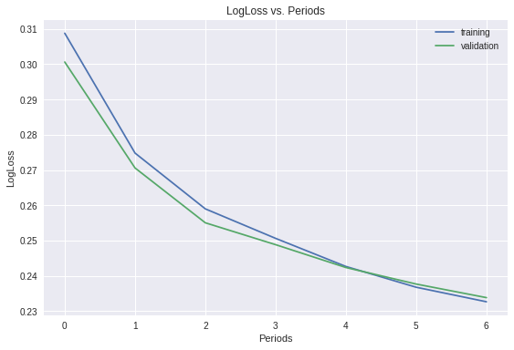

正则化 (Regularization for Simplicity)
略
查准率和召回率
略
逻辑回归
与在之前的练习中一样，我们将使用加利福尼亚州住房数据集，但这次我们会预测某个城市街区的住房成本是否高昂，从而将其转换成一个二元分类问题。此外，我们还会暂时恢复使用默认特征。
构建二元分类问题
数据集的目标是 median_house_value，它是一个数值（连续值）特征。我们可以通过向此连续值使用阈值来创建一个布尔值标签。
我们希望通过某个城市街区的特征预测该街区的住房成本是否高昂。为了给训练数据和评估数据准备目标，我们针对房屋价值中位数定义了分类阈值 - 第 75 百分位数（约为 265000）。所有高于此阈值的房屋价值标记为 1，其他值标记为 0。
设置
1 | from __future__ import print_function |
注意以下代码与之前练习中的代码之间稍有不同。我们并没有将 median_house_value 用作目标，而是创建了一个新的二元目标 median_house_value_is_high。
1 | def preprocess_features(california_housing_dataframe): |
1 | training_examples = preprocess_features(california_housing_dataframe.head(12000)) |
Training examples summary:
| latitude | longitude | housing_median_age | total_rooms | total_bedrooms | population | households | median_income | rooms_per_person | |
|---|---|---|---|---|---|---|---|---|---|
| count | 12000.0 | 12000.0 | 12000.0 | 12000.0 | 12000.0 | 12000.0 | 12000.0 | 12000.0 | 12000.0 |
| mean | 35.6 | -119.6 | 28.6 | 2630.6 | 537.6 | 1426.3 | 499.6 | 3.9 | 2.0 |
| std | 2.1 | 2.0 | 12.6 | 2156.5 | 415.3 | 1158.6 | 379.3 | 1.9 | 1.2 |
| min | 32.5 | -124.3 | 1.0 | 2.0 | 1.0 | 6.0 | 1.0 | 0.5 | 0.0 |
| 25% | 33.9 | -121.8 | 18.0 | 1460.8 | 297.0 | 790.0 | 282.0 | 2.6 | 1.5 |
| 50% | 34.2 | -118.5 | 29.0 | 2113.5 | 432.0 | 1168.0 | 408.0 | 3.5 | 1.9 |
| 75% | 37.7 | -118.0 | 37.0 | 3138.2 | 647.0 | 1717.2 | 603.0 | 4.8 | 2.3 |
| max | 42.0 | -114.3 | 52.0 | 37937.0 | 6445.0 | 35682.0 | 6082.0 | 15.0 | 55.2 |
Validation examples summary:
| latitude | longitude | housing_median_age | total_rooms | total_bedrooms | population | households | median_income | rooms_per_person | |
|---|---|---|---|---|---|---|---|---|---|
| count | 5000.0 | 5000.0 | 5000.0 | 5000.0 | 5000.0 | 5000.0 | 5000.0 | 5000.0 | 5000.0 |
| mean | 35.7 | -119.6 | 28.6 | 2675.1 | 543.8 | 1437.5 | 505.0 | 3.9 | 2.0 |
| std | 2.1 | 2.0 | 12.5 | 2235.0 | 436.1 | 1121.7 | 396.8 | 1.9 | 1.0 |
| min | 32.5 | -124.3 | 2.0 | 12.0 | 4.0 | 3.0 | 3.0 | 0.5 | 0.3 |
| 25% | 33.9 | -121.8 | 18.0 | 1465.8 | 295.8 | 788.0 | 278.0 | 2.6 | 1.5 |
| 50% | 34.3 | -118.5 | 28.0 | 2172.0 | 438.0 | 1165.0 | 411.0 | 3.5 | 1.9 |
| 75% | 37.7 | -118.0 | 37.0 | 3176.0 | 652.0 | 1732.2 | 609.0 | 4.8 | 2.3 |
| max | 41.9 | -114.6 | 52.0 | 32054.0 | 5290.0 | 15507.0 | 5050.0 | 15.0 | 27.1 |
Training targets summary:
| median_house_value_is_high | |
|---|---|
| count | 12000.0 |
| mean | 0.2 |
| std | 0.4 |
| min | 0.0 |
| 25% | 0.0 |
| 50% | 0.0 |
| 75% | 0.0 |
| max | 1.0 |
Validation targets summary:
| median_house_value_is_high | |
|---|---|
| count | 5000.0 |
| mean | 0.3 |
| std | 0.4 |
| min | 0.0 |
| 25% | 0.0 |
| 50% | 0.0 |
| 75% | 1.0 |
| max | 1.0 |
线性回归的表现
为了了解逻辑回归为什么有效，我们首先训练一个使用线性回归的简单模型。该模型将使用 {0, 1} 中的值为标签，并尝试预测一个尽可能接近 0 或 1 的连续值。此外，我们希望将输出解读为概率，所以最好模型的输出值可以位于 (0, 1) 范围内。然后我们会应用阈值 0.5，以确定标签。
运行以下单元格，以使用 LinearRegressor 训练线性回归模型。
1 | def construct_feature_columns(input_features): |
1 | linear_regressor = train_linear_regressor_model( |
Training model...
RMSE (on training data):
period 00 : 0.45
period 01 : 0.45
period 02 : 0.45
period 03 : 0.45
period 04 : 0.46
period 05 : 0.44
period 06 : 0.44
period 07 : 0.44
period 08 : 0.45
period 09 : 0.44
Model training finished.
计算预测的对数损失函数
检查预测，并确定是否可以使用它们来计算对数损失函数。
LinearRegressor 使用的是 L2 损失，在将输出解读为概率时，它并不能有效地惩罚误分类。例如，对于概率分别为 0.9 和 0.9999 的负分类样本是否被分类为正分类，二者之间的差异应该很大，但 L2 损失并不会明显区分这些情况。
相比之下，LogLoss（对数损失函数）对这些”置信错误”的惩罚力度更大。请注意，LogLoss 的定义如下：
$$Log Loss = \sum_{(x,y)\in D} -y \cdot log(y_{pred}) - (1 - y) \cdot log(1 - y_{pred})$$
但我们首先需要获得预测值。我们可以使用 LinearRegressor.predict 获得预测值。
我们可以使用预测和相应目标计算 LogLoss 吗？
1 | predict_validation_input_fn = lambda: my_input_fn(validation_examples, |
训练逻辑回归模型并计算验证集的对数损失函数
要使用逻辑回归非常简单，用 LinearClassifier 替代 LinearRegressor 即可。完成以下代码。
注意：在 LinearClassifier 模型上运行 train() 和 predict() 时，您可以通过返回的字典（例如 predictions["probabilities"]）中的 "probabilities" 键获取实值预测概率。Sklearn 的 log_loss 函数可基于这些概率计算对数损失函数，非常方便。
1 | def train_linear_classifier_model( |
1 | linear_classifier = train_linear_classifier_model( |
Training model...
LogLoss (on training data):
period 00 : 0.60
period 01 : 0.58
period 02 : 0.57
period 03 : 0.56
period 04 : 0.55
period 05 : 0.55
period 06 : 0.54
period 07 : 0.55
period 08 : 0.54
period 09 : 0.53
Model training finished.

计算查准率并为验证集绘制 ROC 曲线
分类时非常有用的一些指标包括：模型准确率、ROC 曲线和 ROC 曲线下面积 (AUC)。我们会检查这些指标。
LinearClassifier.evaluate 可计算准确率和 AUC 等实用指标。
1 | evaluation_metrics = linear_classifier.evaluate(input_fn=predict_validation_input_fn) |
AUC on the validation set: 0.73
Accuracy on the validation set: 0.76
您可以使用类别概率（例如由 LinearClassifier.predict
和 Sklearn 的 roc_curve 计算的概率）来获得绘制 ROC 曲线所需的真正例率和假正例率。
1 | validation_probabilities = linear_classifier.predict(input_fn=predict_validation_input_fn) |
看看您是否可以调整训练的模型的学习设置，以改善 AUC。
通常情况下，某些指标在提升的同时会损害其他指标，因此您需要找到可以实现理想折中情况的设置。
验证所有指标是否同时有所提升。
一个可能有用的解决方案是，只要不过拟合，就训练更长时间。
要做到这一点，我们可以增加步数和/或批量大小。
所有指标同时提升，这样，我们的损失指标就可以很好地代理 AUC 和准确率了。
注意它是如何进行很多很多次迭代，只是为了再尽量增加一点 AUC。这种情况很常见，但通常情况下，即使只有一点小小的收获，投入的成本也是值得的。
1 | # TUNE THE SETTINGS BELOW TO IMPROVE AUC |
Training model...
LogLoss (on training data):
period 00 : 0.50
period 01 : 0.49
period 02 : 0.48
period 03 : 0.48
period 04 : 0.48
period 05 : 0.47
period 06 : 0.47
period 07 : 0.47
period 08 : 0.47
period 09 : 0.47
Model training finished.
AUC on the validation set: 0.81
Accuracy on the validation set: 0.79
稀疏性和 L1 正则化
降低复杂性的一种方法是使用正则化函数，它会使权重正好为零。对于线性模型（例如线性回归），权重为零就相当于完全没有使用相应特征。除了可避免过拟合之外，生成的模型还会更加有效。
L1 正则化是一种增加稀疏性的好方法。
设置
加载数据并创建特征定义。
1 | def my_input_fn(features, targets, batch_size=1, shuffle=True, num_epochs=None): |
计算模型大小
要计算模型大小，只需计算非零参数的数量即可。为此，我们在下面提供了一个辅助函数。该函数深入使用了 Estimator API，如果不了解它的工作原理，也不用担心。
1 | def model_size(estimator): |
减小模型大小
您的团队需要针对 SmartRing 构建一个准确度高的逻辑回归模型，这种指环非常智能，可以感应城市街区的人口统计特征（median_income、avg_rooms、households 等等），并告诉您指定城市街区的住房成本是否高昂。
由于 SmartRing 很小，因此工程团队已确定它只能处理参数数量不超过 600 个的模型。另一方面，产品管理团队也已确定，除非所保留测试集的对数损失函数低于 0.35，否则该模型不能发布。
您可以使用秘密武器“L1 正则化”调整模型，使其同时满足大小和准确率限制条件吗？
查找合适的正则化系数。
查找可同时满足以下两种限制条件的 L1 正则化强度参数：模型的参数数量不超过 600 个且验证集的对数损失函数低于 0.35。
以下代码可帮助您快速开始。您可以通过多种方法向您的模型应用正则化。在此练习中，我们选择使用 FtrlOptimizer 来应用正则化。FtrlOptimizer 是一种设计成使用 L1 正则化比标准梯度下降法得到更好结果的方法。
重申一次，我们会使用整个数据集来训练该模型，因此预计其运行速度会比通常要慢。
正则化强度为 0.1 应该就足够了。请注意，有一个需要做出折中选择的地方：正则化越强，我们获得的模型就越小，但会影响分类损失。
1 | linear_classifier = train_linear_classifier_model( |
Training model...
LogLoss (on validation data):
period 00 : 0.30
period 01 : 0.27
period 02 : 0.26
period 03 : 0.25
period 04 : 0.24
period 05 : 0.24
period 06 : 0.23
Model training finished.
Model size: 790

1 | linear_classifier = train_linear_classifier_model( |
Training model...
LogLoss (on validation data):
period 00 : 0.31
period 01 : 0.27
period 02 : 0.26
period 03 : 0.25
period 04 : 0.24
period 05 : 0.24
period 06 : 0.23
Model training finished.
Model size: 764